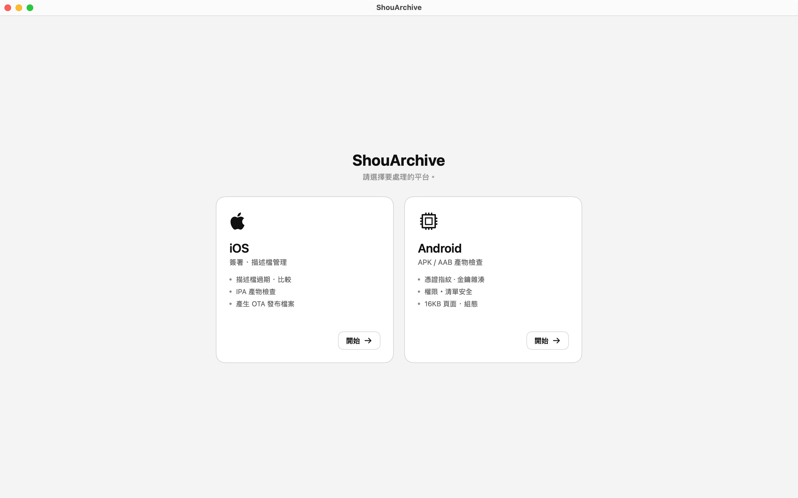
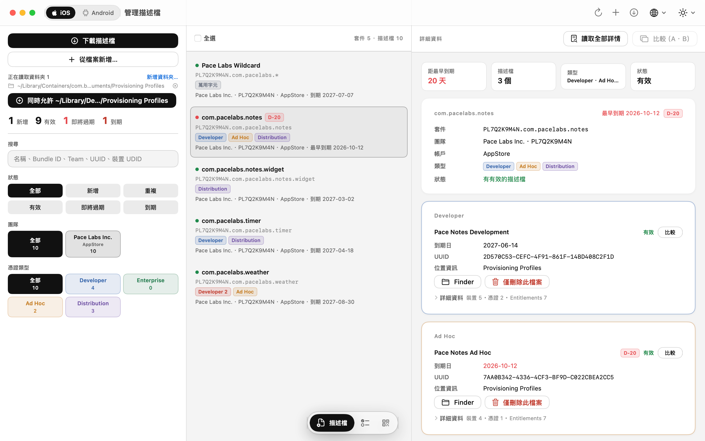
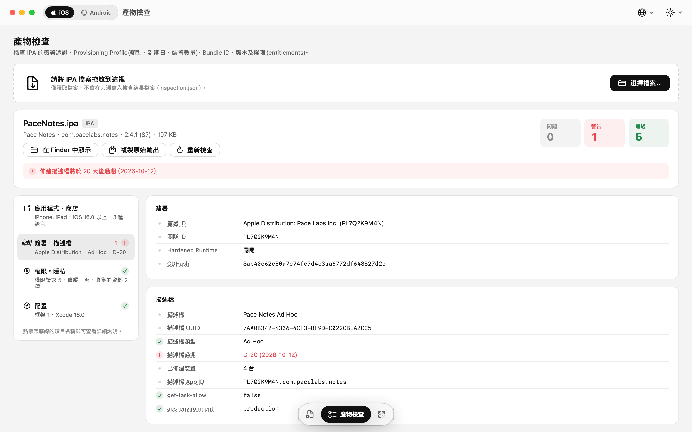
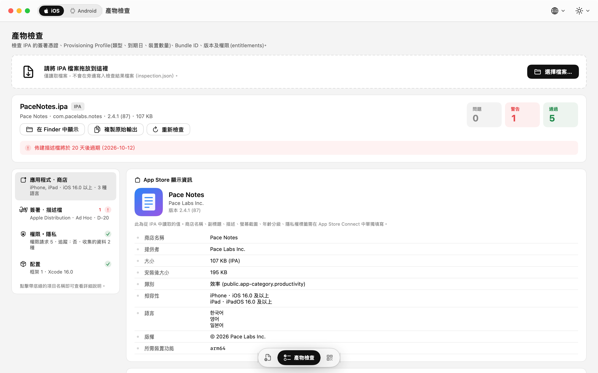
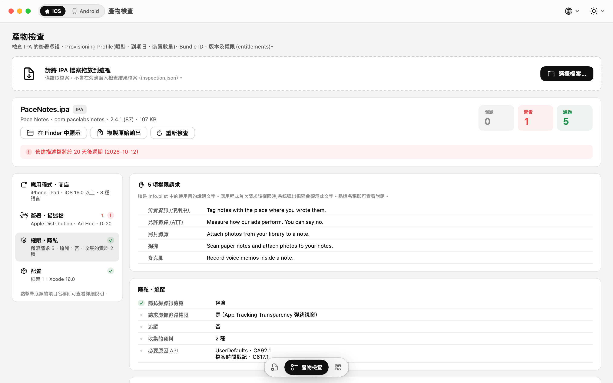
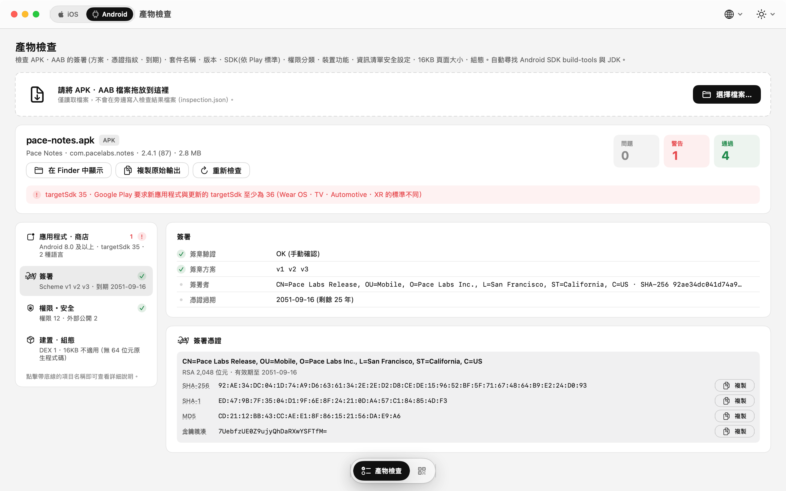
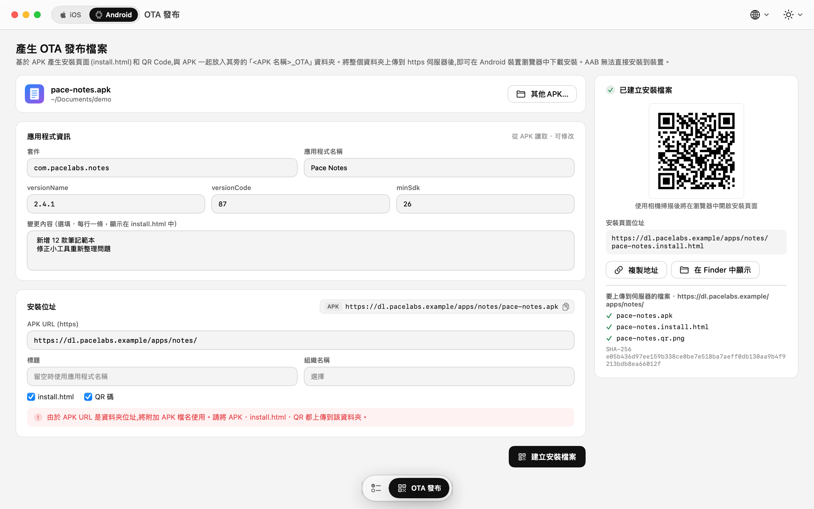

已安裝的描述檔
- 每一列都有 D-N 到期標記 — 30 天內轉為橘色，過期後轉為紅色
- 篩選：全部 · 新增 · 重複 / 有效 · 即將過期 · 到期
- 詳細資料：裝置 UDID、內嵌憑證（SHA-1 · SHA-256）與 Entitlements，皆可一鍵複製
- 比較兩個描述檔，並排列出不同的裝置、憑證與 Entitlements
- 拖入
.mobileprovision檔案即可新增；多選後可一併刪除
描述檔、產物檢查與 OTA 安裝檔案 — 出貨前的最後幾道確認，集中在一款 App。
打開 IPA、APK 或 AAB，即可看到商店會顯示的資訊、簽署方式與所要求的權限。連同到期日一起，把描述檔（provisioning profile）整理得井然有序。為測試版本產生 OTA 安裝頁面。您的檔案永遠不會離開您的 Mac。
macOS 15 Sequoia 或以上版本 · Apple Silicon 與 Intel
描述檔
一眼看遍 Xcode 已安裝的所有描述檔。加入 App Store Connect API 金鑰後，不必離開 App 就能下載、建立與續期描述檔。
.mobileprovision 檔案即可新增；多選後可一併刪除只會用到 Issuer ID、Key ID 與 .p8 檔案。金鑰留在您的 Mac 上，請求權杖皆於本機簽署。
產物檢查
拖入檔案，當場解析 — 不需要外部工具。從商店資訊到簽署、權限與安全設定，每個項目都附有淺白易懂的說明。
可直接從產物讀出的產品頁面資訊。
…UsageDescription）— 留空時會提出警告唯讀。絕不修改檔案，不會在檔案旁寫入任何內容，也不會上傳到任何地方。
OTA 發布
把現有的 IPA 或 APK 變成安裝頁面與 QR Code。將檔案上傳到您自己的 https 伺服器，就大功告成。
manifest.plist、install.html，以及 itms-services:// 安裝連結的 QR Codeinstall.html，內含圖示、版本、SHA-256、安裝說明與更新內容畫面
淺色、深色或系統主題，文字大小 85 到 150 %。分頁位於視窗底部的圖示選單。








系統需求